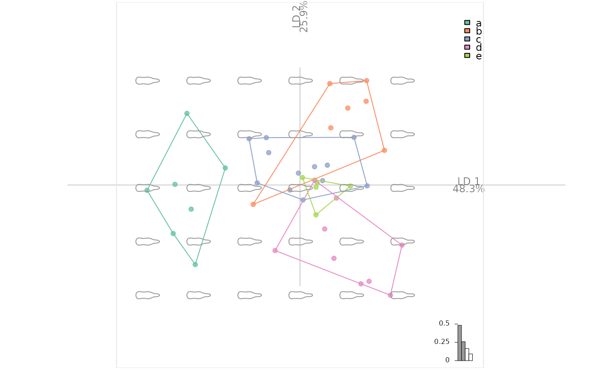

Usage
plot_LDA(
x,
axes = c(1, 2),
palette = pal_qual,
points = TRUE,
points_transp = 1/4,
morphospace = FALSE,
morphospace_position = "range",
chull = TRUE,
chullfilled = FALSE,
labelgroups = FALSE,
legend = TRUE,
title = "",
center_origin = TRUE,
zoom = 0.9,
eigen = TRUE,
box = TRUE,
iftwo_layer = layer_histogram_2,
iftwo_split = FALSE,
axesnames = TRUE,
axesvar = TRUE
)Arguments
- x
LDA object
- axes
numericof length two to select PCs to use (c(1, 2)by default)- palette
color paletteto usecol_summerby default- points
logicalwhether to draw this with layer_points- points_transp
numericto feed layer_points (default:0.25)- morphospace
logicalwhether to draw this using layer_morphospace_PCA- morphospace_position
to feed layer_morphospace_PCA (default: "range")
- chull
logicalwhether to draw this with layer_chull- chullfilled
logicalwhether to draw this with layer_chullfilled- labelgroups
logicalwhether to draw this with layer_labelgroups- legend
logicalwhether to draw this with layer_legend- title
characterif specified, fee layer_title (default to"")- center_origin
logicalwhether to center origin- zoom
numericzoom level for the frame (default: 0.9)- eigen
logicalwhether to draw this using layer_eigen- box
logicalwhether to draw this using layer_box- iftwo_layer
function (no quotes) for drawing LD1 when there are two levels. So far, one of layer_histogram_2 (default) or layer_density_2
- iftwo_split
to feed
splitargument in layer_histogram_2 or layer_density_2- axesnames
logicalwhether to draw this using layer_axesnames- axesvar
logicalwhether to draw this using layer_axesvar
Note
This approach will replace plot.LDA.
This is part of grindr approach that may be packaged at some point. All comments are welcome.
See also
Other grindr:
drawers,
layers,
layers_morphospace,
mosaic_engine(),
papers,
pile(),
plot_NMDS(),
plot_PCA()
Examples
### First prepare an LDA object
# Some outlines with bot
bl <- bot %>%
# cheap alignement before efourier
coo_align() %>% coo_center %>% coo_slidedirection("left") %>%
# add a fake column
mutate(fake=sample(letters[1:5], 40, replace=TRUE)) %>%
# EFT
efourier(6, norm=FALSE) %>%
# LDA
LDA(~fake)
#> factor passed was a character, and coerced to a factor.
bl %>% plot_LDA %>% layer_morphospace_LDA
#> * layer_morphospace_LDA is back, but experimental

# Below inherited from plot_PCA and to adapt here.
#plot_PCA(bp)
#plot_PCA(bp, ~type)
#plot_PCA(bp, ~fake)
# Some curves with olea
#op <- olea %>%
#mutate(s=coo_area(.)) %>%
#filter(var != "Cypre") %>%
#chop(~view) %>% lapply(opoly, 5, nb.pts=90) %>%
#combine %>% PCA
#op$fac$s %<>% as.character() %>% as.numeric()
#op %>% plot_PCA(title="hi there!")
### Now we can play with layers
# and for instance build a custom plot
# it should start with plot_PCA()
#my_plot <- function(x, ...){
#x %>%
# plot_PCA(...) %>%
# layer_points %>%
# layer_ellipsesaxes %>%
# layer_rug
# }
# and even continue after this function
# op %>% my_plot(~var, axes=c(1, 3)) %>%
# layer_title("hi there!") %>%
# layer_stars()
# You get the idea.